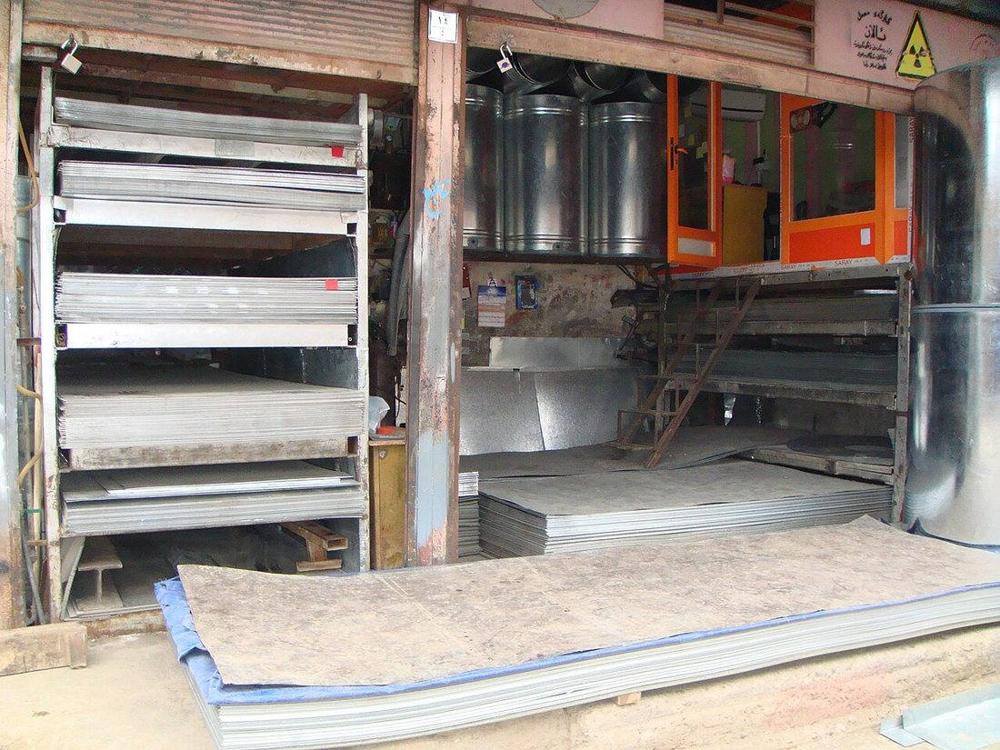
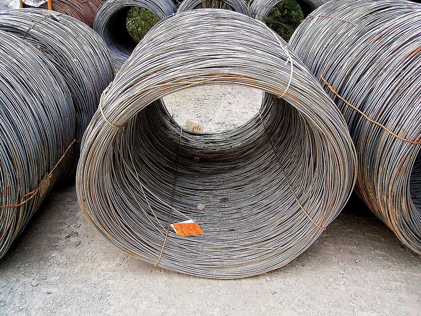
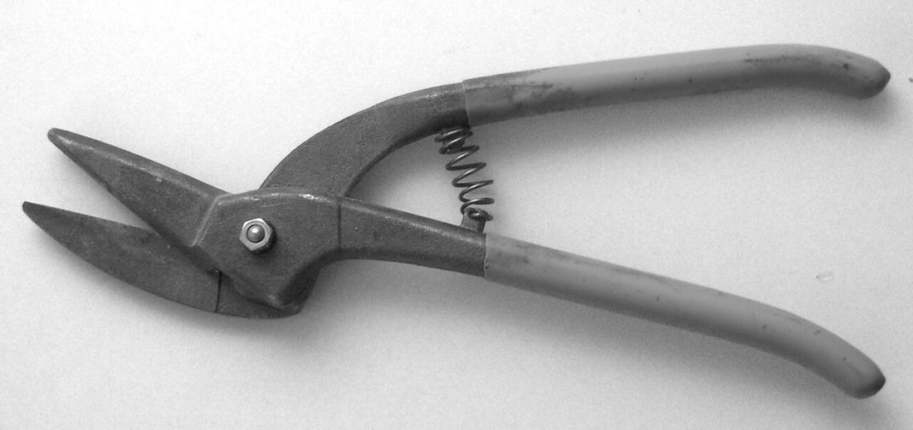
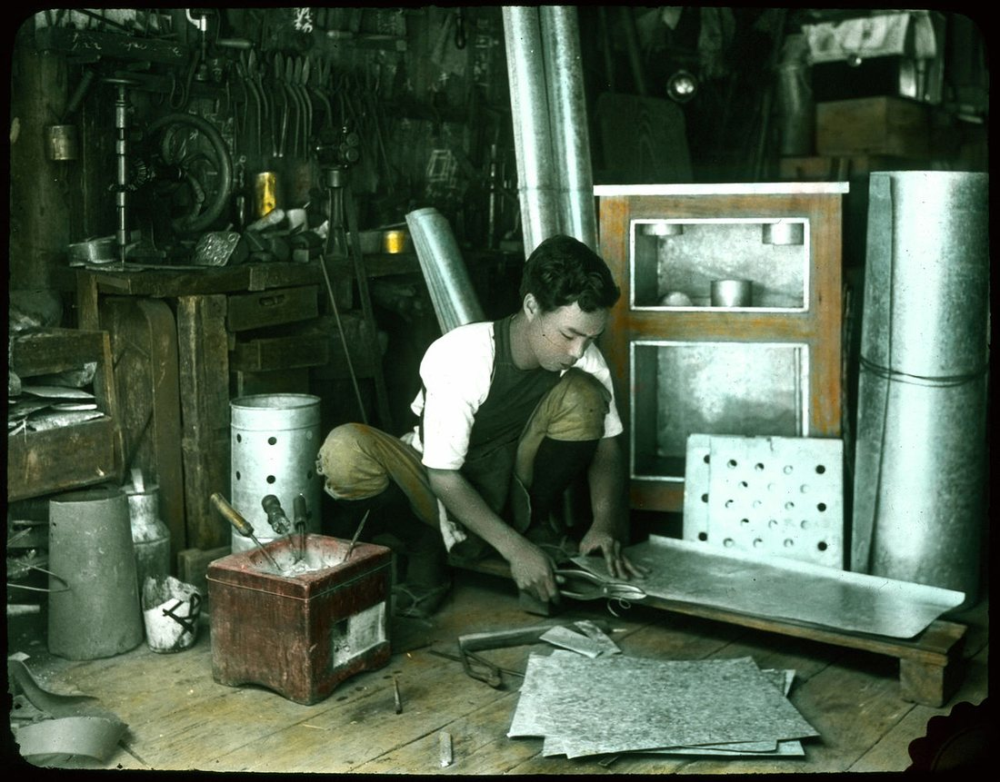
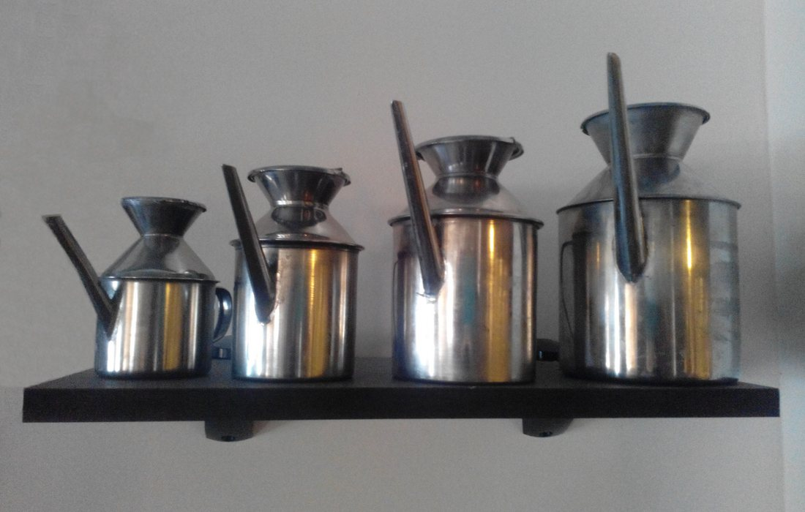

Көркем еңбек (ұлдар) · 3-бөлім · Металл өңдеу Art & Craft (Boys) · Section 3 · Metalworking Художественный труд (мальчики) · Раздел 3 · Обработка металла
🪛 Жұқа қаңылтыр және сым
🪛 Sheet Metal and Wire
🪛 Тонколистовой металл и проволока
Екі негізгі металл жартылай өнімі: парақ пен сым — олардың түрлері, қасиеттері, құралдары және өңдеу тәсілдері. Two basic metal stock forms — the sheet and the wire: their kinds, properties, tools and ways to work them. Два основных полуфабриката металла — лист и проволока: их виды, свойства, инструменты и приёмы обработки.
Тонколистовой металл — қалыңдығы 2 мм-ден аспайтын жұқа металл парақ. Ол арнайы білікшелерден өткізіліп жайылады (прокат). Қалыңдығы 0,2–0,5 мм-лік ең жұқа парақ қаңылтыр (жесть) деп аталады; оны тоттан қорғау үшін қалайымен немесе мырышпен қаптайды. Проволока (сым) — металл дайындаманы тесік арқылы тартып созудан (волочение) шыққан дөңгелек қималы ұзын өнім. Парақ та, сым да — жартылай өнім: олардан тұрмыстық бұйымдар, ыдыстар, тор, шеге, сұлба-каркастар жасалады. Бұл материалдар иілгіш әрі жеңіл өңделеді, сондықтан мектеп шеберханасында ұлдардың алғашқы металл жұмысы дәл осыдан басталады. Sheet metal is a thin metal plate no more than about 2 mm thick, produced by squeezing the metal between rolls (rolling). The thinnest sheet, 0.2–0.5 mm, is called tinplate; to protect it from rust it is coated with tin or zinc. Wire is a long product of round cross-section made by pulling a metal blank through a die (drawing). Both sheet and wire are semi-finished stock: from them we make household articles, vessels, mesh, nails and skeleton frames. These materials are flexible and easy to work, which is why a boy's first metalwork in the school workshop usually starts right here. Тонколистовой металл — это тонкий металлический лист толщиной не более 2 мм, полученный прокаткой между валками. Самый тонкий лист, 0,2–0,5 мм, называют жестью; чтобы защитить её от ржавчины, её покрывают оловом или цинком. Проволока — это длинное изделие круглого сечения, полученное вытягиванием металлической заготовки сквозь отверстие (волочение). И лист, и проволока — это полуфабрикат: из них делают бытовые изделия, посуду, сетку, гвозди, каркасы. Эти материалы гибкие и легко обрабатываются, поэтому первая работа мальчиков с металлом в школьной мастерской начинается именно с них.
Екі материал: парақ пен сым The Two Materials: Sheet and Wire Два материала: лист и проволока
🔍 Суретті үлкейту үшін басыңыз. 🔍 Tap a photo to enlarge it. 🔍 Нажмите на фото, чтобы увеличить.


Олар қалай жасалады How They Are Made Как их получают
📜 Прокат — парақ жасау📜 Rolling — making sheet📜 Прокатка — лист
Қызған металл құйманы екі айналмалы білікшенің арасынан өткізеді. Білікшелер оны қыспалап жайып, жұқа әрі тегіс параққа айналдырады. Бұл — прокат (прокатка).A hot metal ingot is passed between two rotating rolls. The rolls squeeze and flatten it into a thin, even sheet. This is called rolling.Раскалённый слиток пропускают между двумя вращающимися валками. Валки сдавливают и раскатывают его в тонкий ровный лист. Это прокатка.
🧵 Волочение — сым жасау🧵 Drawing — making wire🧵 Волочение — проволока
Металл шыбықты кішірейіп баратын тесіктер (фильера) арқылы тартады. Әр өткен сайын ол жіңішкеріп, ұзарады. Бұл — волочение (созу).A metal rod is pulled through ever-smaller holes (a die). With each pass it grows thinner and longer. This is called drawing.Металлический пруток протягивают сквозь всё меньшие отверстия (фильеру). С каждым проходом он становится тоньше и длиннее. Это волочение.
Парақ пен сымды салыстыру Sheet vs. Wire — a Comparison Сравнение листа и проволоки
| Признак | Тонколистовой металл | Проволока |
|---|---|---|
| Форма | плоский лист | круглый «шнур» |
| Как получают | прокаткой между валками | волочением сквозь фильеру |
| Размер | толщина 0,2–2 мм | диаметр 0,2 мм – неск. мм |
| Хранят | стопками, рулонами | бухтами, катушками |
| Чем режут | ножницами по металлу | кусачками, бокорезами |
| Что делают | коробки, посуда, кровля | сетка, гвозди, каркасы, крючки |
| Белгісі | Жұқа қаңылтыр | Сым (проволока) |
|---|---|---|
| Пішіні | жалпақ парақ | дөңгелек «жіп» |
| Қалай алынады | білікшеде прокаттау | фильера арқылы созу |
| Өлшемі | қалыңдығы 0,2–2 мм | диаметрі 0,2 мм – бірнеше мм |
| Сақтау | буда, рулон түрінде | орам, катушка түрінде |
| Немен кеседі | металл қайшысымен | кескішпен, бокорезбен |
| Не жасайды | қорап, ыдыс, шатыр | тор, шеге, каркас, ілгек |
| Feature | Sheet metal | Wire |
|---|---|---|
| Shape | flat plate | round "cord" |
| How made | rolled between rolls | drawn through a die |
| Size | thickness 0.2–2 mm | diameter 0.2 mm – a few mm |
| Stored as | stacks, rolls | coils, spools |
| Cut with | tin snips | nippers, side cutters |
| Used for | boxes, vessels, roofing | mesh, nails, frames, hooks |
Негізгі құрал — металл қайшысы The Key Tool — Tin Snips Главный инструмент — ножницы по металлу
🔍 Суретті үлкейтуге болады. 🔍 You can enlarge the photo. 🔍 Фото можно увеличить.

Жұқа парақты қиюға арналған.For cutting thin sheet.Для резки тонкого листа.
Сымды үзіп кеседі.Bite through wire.Перекусывают проволоку.
Сымды ұстап иеді.Grip and bend wire.Держат и гнут проволоку.
Сымнан ілмек, шеңбер жасайды.Make loops and rings.Делают петли и кольца.
Парақты түзетіп, иеді.Straighten and bend sheet.Правят и гнут лист.
Параққа белгі салады (разметка).Mark out the sheet.Размечают лист.
Парақтан бұйым жасау тәртібі Making an Article from Sheet — in Order Порядок изготовления изделия из листа
Белгіле.Mark out.Размечай. Сызғыш пен кесегішпен бұйымның сұлбасын параққа сыз.Draw the outline on the sheet with a ruler and scriber.Линейкой и чертилкой нанеси контур изделия на лист.
Кес.Cut.Режь. Металл қайшысымен сызық бойымен ақырын қи.Cut along the line with tin snips, steadily.Ножницами по металлу режь по линии, не спеша.
Жиегін өңде.Deburr.Зачисти кромку. Үшкір қылшықтарды (заусенцы) егеумен тегісте.File away the sharp burrs on the edge.Сними напильником острые заусенцы.
Түзет.Flatten.Выправи. Майысқан жерін төс үстінде ағаш балғамен түзу қыл.Tap any bends flat on the anvil with a mallet.Выправи изгибы на наковальне киянкой.
Иілу сызығын сал.Score the fold.Наметь сгиб. Қай жерден бүгілетінін белгіле.Mark exactly where it will fold.Отметь, где будет линия сгиба.
Иіп бүк.Bend.Гни. Парақты қысқышқа қысып, сызық бойымен бүк.Clamp the sheet and bend it along the line.Зажми лист в тисках и согни по линии.
Жал.Join.Соедини. Жиектерін тойтармамен (заклёпка) немесе тігіспен (фальц) қос.Join the edges with rivets or a folded seam.Соедини кромки заклёпками или фальцевым швом.
Тексер.Check.Проверь. Өлшемі мен тегістігін бақыла, қылшық қалмасын.Check the size and that no sharp burrs are left.Проверь размер и что не осталось острых краёв.

Сыммен жұмыс Working with Wire Работа с проволокой
Түзет.Straighten.Выправи. Орамнан алынған сымды ағаш тақтайда қолмен немесе балғамен түзу қыл.Straighten the coiled wire by hand or with a mallet on a board.Распрями проволоку из бухты рукой или киянкой на доске.
Өлшеп кес.Measure & cut.Отмерь и откуси. Керекті ұзындықты өлшеп, кескішпен үзіп ал.Measure the length and cut it with nippers.Отмерь нужную длину и откуси кусачками.
Иіп пішінде.Bend to shape.Согни по форме. Дөңгелек тұмсықпен ілмек, шеңбер немесе керекті пішін жаса.Use round-nose pliers to make loops, rings or the needed shape.Круглогубцами сделай петлю, кольцо или нужную форму.
Қос.Join.Соедини. Бөліктерді бұрап байла немесе дәнекерле (пайка).Twist the pieces together or solder them.Скрути части вместе или спаяй.
Сым иілгіш болғандықтан, одан тор, ілгек, каркас пен әшекей оңай жасалады.Because wire is so flexible, it easily becomes mesh, hooks, frames and ornaments.Поскольку проволока очень гибкая, из неё легко делают сетку, крючки, каркасы и украшения.
Олардан не жасалады What Is Made from Them Что из них делают
Жұқа қаңылтырдан ыдыс (кружка, шелек, лейка, консерві банкасы), шатыр жабыны, желдету құбырлары мен қораптар жасалады. Суреттегі майшамдар (лейкалар) — қаңылтырдан жасалған тұрмыстық бұйымның классикалық мысалы. From thin tinplate we make vessels (mugs, buckets, oil cans, food tins), roofing, ventilation pipes and boxes. The oil cans in the photo are a classic example of an everyday tinware article. Из тонкой жести делают посуду (кружки, вёдра, маслёнки, консервные банки), кровлю, вентиляционные трубы и коробки. Маслёнки на фото — классический пример бытового изделия из жести.

Қауіпсіз жұмыс ережелері Safe-Work Rules Правила безопасной работы
✋ Жиектен сақ бол.Mind the edges.Берегись кромок. Кесілген парақтың жиегі ұстара сияқты өткір.A freshly cut edge is as sharp as a razor.Свежий срез листа острый как бритва.
🧤 Қолғап ки.Wear gloves.Надевай перчатки. Парақты ұстағанда қолыңды қор.Protect your hands when handling sheet.Защищай руки при работе с листом.
🥽 Көзіңді қор.Protect your eyes.Береги глаза. Кескенде ұсақ металл бөлшегі ұшуы мүмкін.Tiny metal bits can fly off when cutting.При резке могут отлетать кусочки металла.
✂️ Қайшыны дұрыс ұста.Hold snips right.Держи ножницы верно. Саусағыңды жүздердің арасына апарма.Keep fingers out from between the blades.Не держи пальцы между лезвиями.
🪡 Сым ұшы — қауіпті.Wire ends are dangerous.Концы проволоки опасны. Кескен сымның ұшы көзге, теріге тиюі мүмкін.A cut wire end can hit an eye or skin.Отрезанный конец может попасть в глаз или кожу.
🧹 Орынды тазала.Clean up.Убирай место. Металл қиындыларын (стружка) жинап таста.Sweep up the metal off-cuts and swarf.Убирай металлические обрезки и стружку.
💬 Қорытынды 💬 In a nutshell 💬 Главное
Тонколистовой металл мен сым — металл өңдеудің ең қарапайым бастапқы материалдары. Парақ прокаттаудан, сым волочениеден алынады. Екеуі де иілгіш: парақты қайшымен кесіп иеді, сымды кескішпен кесіп пішінге келтіреді. Олардан ыдыс, шатыр, тор, каркас сияқты пайдалы бұйымдар жасалады. Ең бастысы — өткір жиек пен ұшты естен шығармай, қауіпсіздік ережелерін сақтау. Sheet metal and wire are the simplest starting materials of metalwork. Sheet comes from rolling, wire from drawing. Both are flexible: sheet is cut with snips and bent, wire is cut with nippers and shaped. From them we make useful things — vessels, roofing, mesh, frames. Above all, never forget the sharp edges and ends, and follow the safety rules. Тонколистовой металл и проволока — это простейшие исходные материалы обработки металла. Лист получают прокаткой, проволоку — волочением. Оба гибкие: лист режут ножницами и гнут, проволоку откусывают кусачками и формуют. Из них делают полезные вещи — посуду, кровлю, сетку, каркасы. Главное — помнить про острые кромки и концы и соблюдать правила безопасности.